Hjarnø
Schiffsetzungen


77 - Hjarnø - Letztes Update 03.10.2025
Navidaten: 55.81808 10.08582 oder: Hjarnø (Kalvestenene), 8700 Horsens, Dänemark
Auf die Insel Hjarnø kann man (normalerweise) nur mit der kleinen Fähre von Snaptun aus gelangen.
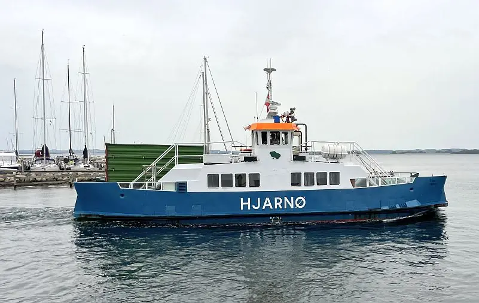
Über die Sommerzeit gibt es nun aber seit geraumer Zeit - nur für Fußgänger und Radfahrer - eine weitere Fährmöglichkeit von der nördlich gelegenen Insel Alrø.
An der Südostseite der Insel Hjarnø befindet sich ein geschütztes Gebiet mit 10 Schiffssetzungen, die sogenannten "Kalvestenene" (Kälber Steine). Auf einem mit Grassoden eingedeichten Areal von ca. 32 x 22 m finden sich heute noch 10 Schiffssetzungen aus meist kleineren Steinen, die teilweise sehr fragmentarisch O-W ausgerichtet und zwischen 4 und 12 m lang sind. Es sind keine Schiffssetzungen monumentalen Typs, wie man sie von Klebæk Høje oder Lejre kennt, aber gleich denen, die bei Lindholm Høje aufgedeckt wurden.
Ein Teil des Begräbnisplatzes wurde offenbar im Laufe der Zeit vom Meer überspült. Anhand von Luftfotos aus den Jahren 1999 - 2006 konnte man Spuren von Schiffssetzungen im Flachwasser erkennen. Nach einer Anfrage zur Erosion der Küstenlinie in Höhe der Schiffssetzungen führte man am 18.05.1996 von Museumsseite eine Ortsbegehung durch, konnte dabei aber keine "Kulturspuren" erkennen.
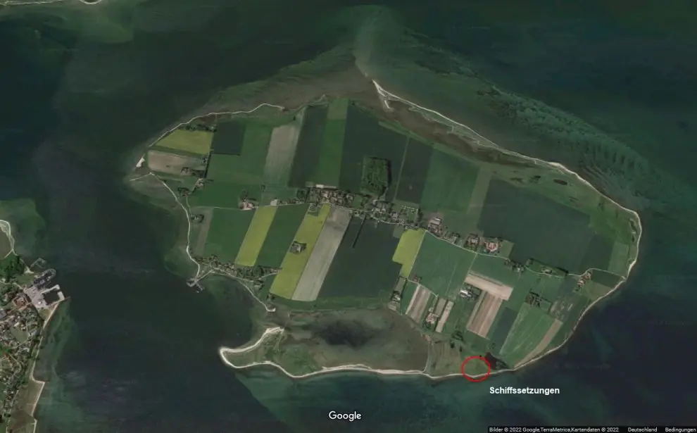
Die früheste schriftliche Quelle zu "Hjarnø" findet sich bei dem damals in Lund/Schweden aufhältigen Saxo Grammaticus in seiner "Gesta Danorum" aus dem Ende des 12. Jahrhunderts (Ab 1185 - 1216 verfasst). Er erzählt im "Buch 6, Kapitel 3" die Geschichte von "König Hjarni", der nach diversen verlorenen Schlachten auf eine Insel geflohen sei, die nach ihm ihren Namen erhielt. Es ist für viele faszinierend, dass dieser große Geschichtsschreiber ausgerechnet diese kleine Insel erwähnt und von anderen eher bekannten Stätten nichts berichtet. Saxo Grammaticus kannte also diese Steindenkmäler, was nicht heißt, dass er sie je selbst gesehen hat. Ein anderer wichtiger Hinweis ist die Namensgebung quam insula uocabulum ex eius nuncupatione sortita testatur. - Übersetzung: "eine nach ihm benannte Insel zeugt von dem Ereignis". Aber es erscheint unwahrscheinlich, dass König Hjarni je existiert hat. Er wird in keiner anderen wichtigen Quelle erwähnt. Viel eher wird er als Person eine Erfindung sein - vielleicht von Saxo Grammaticus selbst - und die Insel wurde nach ihm benannt.
An dieser Stelle möchte ich darauf hinweisen, dass sich mit dem sogenannten "Angers Fragment" einige wenige Blätter mit der originalen Handschrift von Saxo Grammaticus erhalten haben. Die Blätter wurden 1863 im Band einer spätmittelalterlichen Handschrift in der Bibliothèque Municipale in Angers entdeckt. Ihre besondere Bedeutung als Quelle für Saxos Text wurde 1877 nachgewiesen. Im folgenden Jahr wurden sie von der Königlichen Bibliothek Kopenhagen im Tausch mit einem Manuskript aus der Abtei Saint-Martin-des-Champs in Paris erworben. Heutzutage kann man die Blätter - NKS 869 g 4°: Saxo, Gesta Danorum, Angersfragmentet - als Digitalisate in aller Ruhe betrachten.
Die früheste urkundliche Erwähnung von "Hiarnø" hingegen findet sich in einer Quelle von 1231, dem "Kong Valdemars Jordebog" (Eine Auflistung königlicher Ländereien). Dort findet sich der kurze Eintrag "Hiarnø hus haræ" (S. 66, linke Spalte, 11. Zeile von oben) was soviel wie "Hjarnø Haus Hase" bedeutet. König Valdemar der II. lobte die Insel als guten Jagdgrund - Die rote Einrahmung der betreffenden Zeile habe ich hinzugefügt.
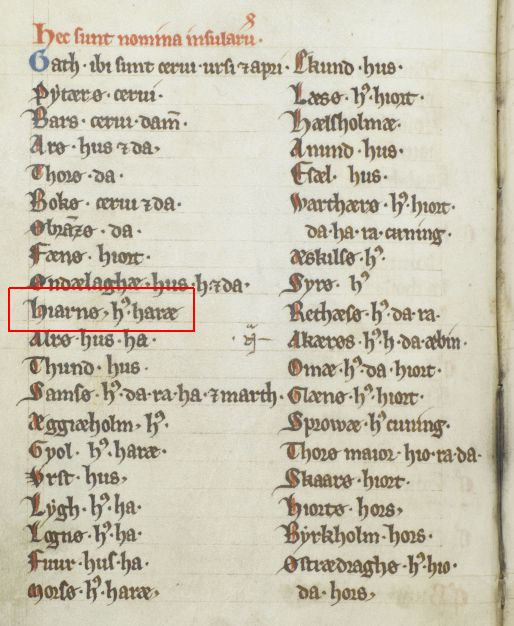
Eine Übersetzung dieses Werkes - allerdings nur ins Dänische - findet sich hier. Diese Fundstelle leistet bei der Suche nach einer Örtlichkeit aber sehr gute Arbeit, da das Original nur Seite für Seite durchgesehen werden kann.
Zu Ole Worms (*13.05.1588 - 31.08.1654, Arzt, Universalgelehrter und der Begründer der Runologie)
 Bildquelle:
Digitale Sammlung der Königlichen Bibliothek Kopenhagen -
Lizenz:
Public Domain
Bildquelle:
Digitale Sammlung der Königlichen Bibliothek Kopenhagen -
Lizenz:
Public Domain
Zeiten war diese Stätte von daher schon lange bekannt. Er schrieb darüber begeistert in einem Ergänzungsband zu seinem Hauptwerk (Danicorum Monumentorum libre sex - 1643 - auch als Monumenta Danica benannt), nämlich in den "Additamenta ad Monumenta Danica" von ca. 1650 (S. 4/5):
"Wer sich wünscht eine merkwürdige Vielfalt von verschiedenen Hügeln an einer Stelle gesammelt zu sehen, der muss nach Hjarnø reisen und kann sie dort - und davon bin ich überzeugt - sehen und sich wundern.
Hjarnø heißt vermutlich nach König Hjarne, der geschmückt wurde mit Krone und Königsname als Dank für ein Leichenlied, das er für König Frode geschrieben hat.
All die kleineren Hügel, die man sieht, erreichen in der Länge 12 bis 13 Ellen, in der Breite 4 oder 5; doch der größte - der, von dem sie sagen, dass die Leiche des Königs selbst darin begraben sei - erreicht 30 Ellen und ist ungefähr 20 breit. Aber die Leute glauben, dass es Hjarne ist, der mit seinem ganzen Heer beigesetzt ist.
Die Einheimischen erzählen sich auch, dass ein Stier mit seinen Hörnern ein Schwert aus einem dieser Hügel aufgewühlt hatte und ein Bauer, nachdem er es an sich genommen hatte, nachts eine Stimme hörte, die ihn ermahnte, es an Ort und Stelle zurückzulegen, wenn ihm nicht ein Unglück zustoßen sollte. Der Mann, der es in Verwahrung genommen hatte, unterließ es nicht, den Auftrag durchzuführen."
Ole Worm hat darin auch diese Skizze veröffentlicht, die uns heute vielleicht eine Vorstellung des wohl ursprünglichen Aussehens der Anlage vermittelt. Unmittelbar vor die Zeichnung setzte er den Text: "In australi ejus parte in planitie prope littus ultra viginti invenies eo ordine et situ locatos, quo in sequenti cernere licet diagrammate" - Übersetzung: "Auf der Südseite der Insel, auf einem flachen Feld in der Nähe des Strandes, finden Sie mehr als zwanzig Gräber in der Reihenfolge, die Sie auf der Zeichnung sehen können".
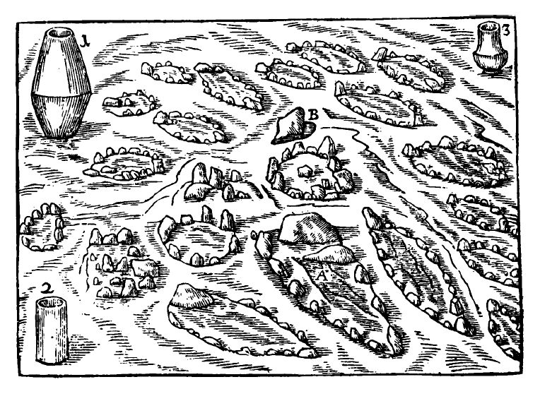
Nach die Zeichnung setzte er den lateinischen Text: "Omnes hi tumuli, qvi minores cernuntur, longitudine ad 12 aut 13 accendunt ulnas latitudine 4 aut 5 sed maximus cui mandatum volunt cadaver ipsius regis ad triginta accedit latus viginti circiter. Hiarnum vero hie cum toto exercitu tumulatum existimant" - Übersetzung: "Alle Hügel, die als klein eingestuft werden, sind 1213 Ellen lang und 45 breit; aber der größte, in dem der Körper des Königs begraben sein soll, ist 30 in der Länge und 20 in der Breite. Die Einwohner von Hjarnø glauben, dass König Hjarne hier zusammen begraben ist mit seiner ganzen Heer".
Mit "A" bezeichnete Ole Worm dabei das Grab von König Hjarnes, da es die größte Schiffssetzung war.
Auch Erik Pontoppidan (der Jüngere, *03.09.1698 - 20.12.1764)
 Bildquelle:
Wikipedia - Lizenz:
Public Domain
Bildquelle:
Wikipedia - Lizenz:
Public Domain
macht in seinem Werk von 1768 "Den Danske Atlas" - Band IV, V. Capitel Aarhus Stift, Stiernholms Amt, S. 160 ff. (S. 25 in der pdf-Datei), ausführliche Angaben über Hjarnø. So schreibt er u.a.: "...Hiarne wurde mit all seinen Leuten auf seiner Zufluchtsinsel begraben, und laut Aussage von Saxonis Grammatici muss das Grab seinen Namen tragen, da es Hiarne-Høi heißt..."
Horace Marryat (*1818 - 10.03.1887, englischer Reisender und Autor)
 Bildquelle:
Silkeborg Archiv - Lizenz:
Public Domain
Bildquelle:
Silkeborg Archiv - Lizenz:
Public Domain
veröffentlichte 1860 die zweibändige Ausgabe "A Residence in Jutland, the Danish Isles and Copenhagen" (Band 1 - Band 2). Im Band 2, S. 12-13, berichtet er von seinem kurzen Besuch auf der Insel Hjarnø bei den Schiffssetzungen und gibt dabei die Geschichte von dem Stier, der angeblich ein Schwert fand, wieder - siehe oben.
1880 hatte sich Carl Nicolai Henry Petersen (*20.03.1849 - 21.09.1896, dänischer Archäologe, 1879 im Nationalmuseum angestellt, ab 1892 als Leiter der Mittelalterabteilung - link-LIVES)
 Bildquelle:
Wikipedia - Lizenz:
Public Domain
Bildquelle:
Wikipedia - Lizenz:
Public Domain
auf der Insel Hjarnø auf die Suche nach den Steinsetzungen begeben und fand zu der Zeit nur noch 7 erkennbare Schiffssetzungen vor. Dazu wird in den "Aarbøger for nordisk oldkyndighed og historie 1881" auf der S. 155 berichtet.
Dann zog im Jahre 1935 der Hofbesitzer Anders Rasmussen die Aufmerksamkeit des Nationalmuseum in Kopenhagen auf sich, da auf seinem Grundstück wieder Reste der Schiffssetzungen gefunden wurden. Mit großem Eifer haben er und seine Nachbarn geholfen die Überreste im August 1935 zu extrahieren und wiederherzustellen.
In dem Zusammenhang wurde die Anlage vom 20. bis 25. August 1935 von Konservator Julius Raklev (*21.01.1878 26.09.1950)
 Bildquelle:
Raklev Lokalarkiv /
Arkiv.dk
- Lizenz:
CC-BY-SA
Bildquelle:
Raklev Lokalarkiv /
Arkiv.dk
- Lizenz:
CC-BY-SA
vom Nationalmuseum Kopenhagen untersucht. Er war gemeinsam mit dem Konservator Gustav Adolf Theodor Rosenberg (*08.06.1872 04.12.1940, Archäologe - link-LIVES)
 Bildquelle:
Königliche Bibliothek Kopenhagen -
Lizenz:
CC-BY-SA
Bildquelle:
Königliche Bibliothek Kopenhagen -
Lizenz:
CC-BY-SA
am 19.08.35 auf die Insel gekommen (Dieser reiste aber bereits früher wieder ab). Zu dieser Zeit war auf dem entsprechenden Geländeabschnitt (Matrikel Nr. 26) nur noch wenig zu sehen, aber sie konnten nach Abtragung der Grasnarbe immerhin Spuren von insgesamt 10 Schiffssetzungen nachweisen, die nun noch im geschützten Areal zu sehen sind. Ein Stein (Stein 4 aus der Schiffssetzung 9), den der Landbesitzer aus der Schiffssetzung entnommen und in seinem Hof aufgestellt hatte, wurde wieder zurückgebracht. Drei Schiffssetzungen wurden ausgegraben und in allen drei fanden sich Spuren von Brandgräbern und eine beschränkte Anzahl von eisenzeitlichen Scherben und wenige rostige Eisenfragmente. Auf E-Mail Anfrage wurde mir am 17.06.2022 vom Nationalmuseum in Kopenhagen der originale, handschriftliche, 3-seitige Bericht von Herrn Raklev mit zwei Skizzen per E-Mail als Scan übermittelt. Besten Dank dafür!
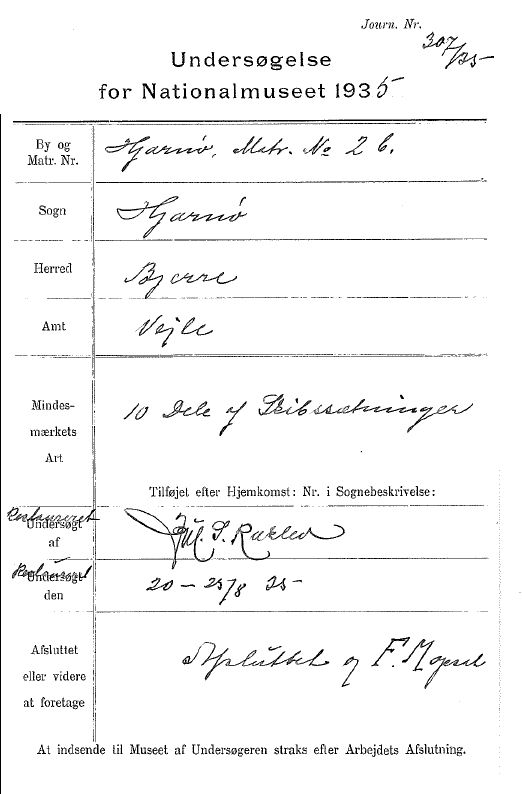
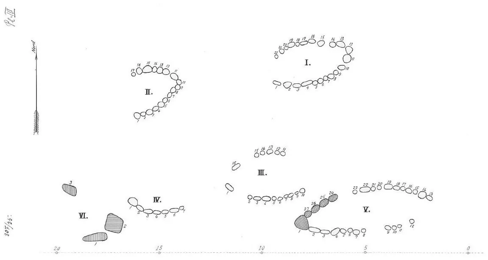
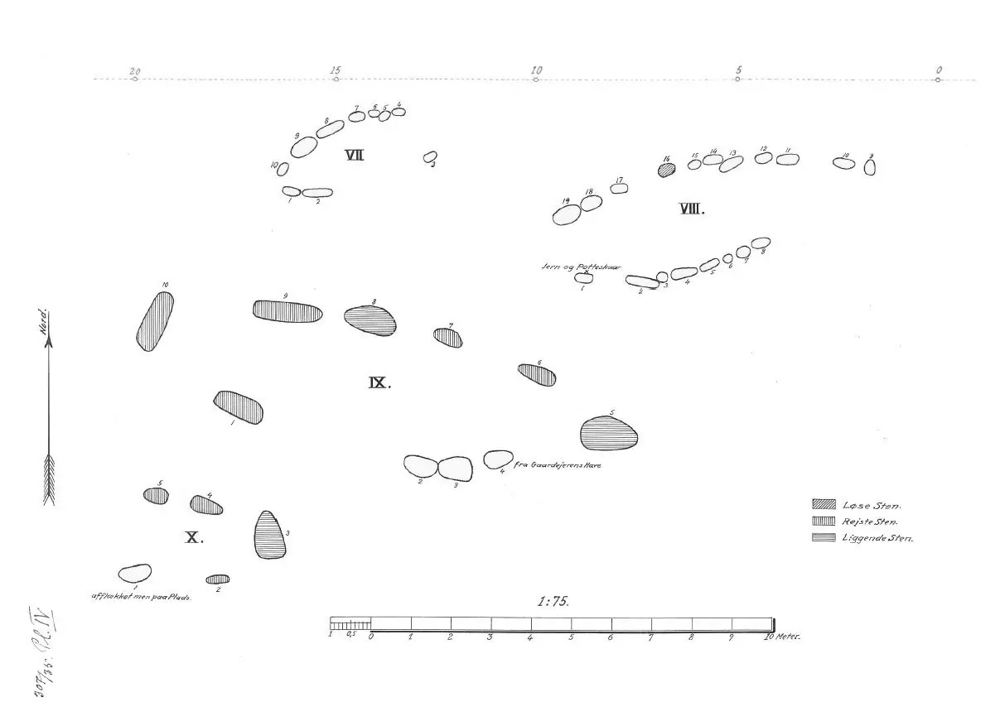
Hans Christian Broholm (*08.03.1893 - 16.06.1966, Archäologe - link-LIVES) schrieb in seiner Abhandlung "Skibssætninger i Danmark" aus dem Jahr 1937 im Hinblick auf den Landbesitzer: "Dafür gebührt Rasmussen ein herzliches Dankeschön, auch weil er nach der Restaurierung die Fläche gespendet hat, auf der sich die Denkmäler befinden". Neben seinen Ausführungen finden sich in der Abhandlung auch diese drei Fotos.
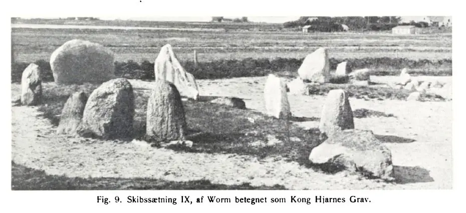
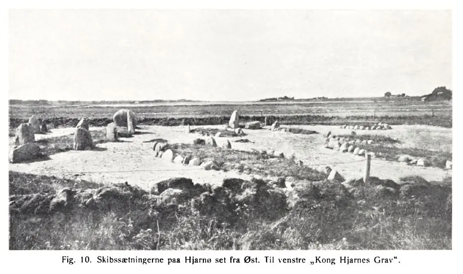
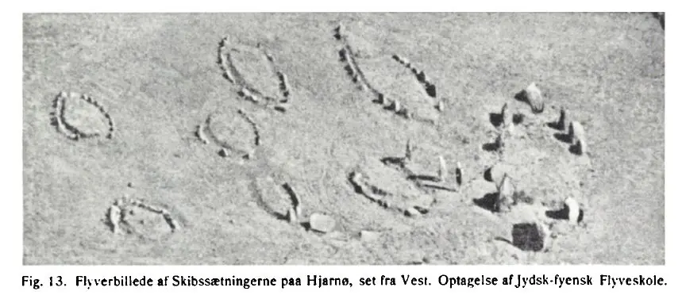
H.C. Broholm hatte schon zuvor in der "Acta Archaeologica, Volume VII, 1936, S. 333/34" den kurzen Textbeitrag zur Nr. 22 mit diesem Foto verfasst:
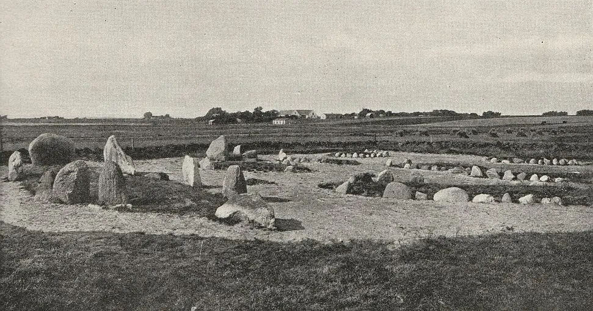
"22. Isle of Hjarnø, Hjarnø par., off East Jutland. Cemetery. Excavation and restoring of ten more or less completely preserved oval stone "ships" of various sizes, varying from 4 to 12 m in length, from 2.20 to 2.80 m in breadth. All these "ships" lay in directions about E-W; in those of which the west end was preserved, the highest stones stood there. The only findes of relics in association with them where a few rusty fragments of iron and parts of entirely decomposed clay vessels. It is permissable to assume that this locality dates from Viking times, and that the boat-shapes, which may have been cenotaphs, but which in Denmark at any rate are a foreign form, were laid by Norwegians or Swedes."
Übersetzung: "22. Insel Hjarnø, Par. Hjarnø, vor Ostjütland. Friedhof. Ausgrabung und Restaurierung von zehn mehr oder weniger vollständig erhaltenen ovalen Stein-"Schiffen" unterschiedlicher Größe, von 4 bis 12 m Länge, von 2,20 bis 2,80 m Breite. Alle diese "Schiffe" lagen in Richtung O-W; bei denen, von denen das Westende erhalten blieb, standen dort die höchsten Steine. Die einzigen Funde von Reliquien in Verbindung mit ihnen waren einige rostige Eisenfragmente und Teile von vollständig zersetzten Tongefäßen. Es ist anzunehmen, dass diese Lokalität aus der Wikingerzeit stammt, und dass die Bootsformen, die Kenotaphe gewesen sein mögen, aber in Dänemark jedenfalls eine Fremdform sind, von Norwegern oder Schweden gelegt wurden."
Am 20. Mai 2009 führte Tatiana Smekalova im Auftrag des Horsens Museums auf einer Fläche von ca. 2200 m2 eine magnetische Untersuchung des Areals der Kalvestene durch, in der Hoffnung, die zusätzlichen von Ole Worm dokumentierten Gräber und andere Überreste zu finden. Eine Abhandlung dazu wurde auf meine Anfrage hin am 11.03.2022 vom Horsens Museum in Fund og Fortidsminder eingestellt und kann hier abgerufen werden (Leider ohne die Bilder, auf die verwiesen wird). Die Forscherin kommt in ihrer Zusammenfassung zu diesem Ergebnis: "Die magnetische Vermessung erwies sich als effektives Mittel zur Untersuchung des Gebiets des Standorts Hjarnø Kalvestene. Das wichtigste Ergebnis ist, dass es möglich war, eine lineare Gruppe von Anomalien aus möglichen Steinen aufzudecken, die zu schiffsförmigen Monumenten gehören könnten. Dieser Bereich befindet sich im zentralen Teil des östlichen Grundstücks. Es wäre vielleicht nützlich, das Gebiet der magnetischen Untersuchung nach Osten auszudehnen, um zu sehen, ob sich die Anomalien aufgrund möglicher Steinkonzentrationen weiter nach Osten fortsetzen. Es wäre auch nützlich, auf den südlichen und nordwestlichen Grundstücken erneut eine magnetische Vermessung durchzuführen, nachdem sie mit einem Metalldetektor von modernem Metall gereinigt wurden."
Diese Aufnahme der magnetischen Sondierung darf ich mit Erlaubnis von Frau Lone Seeberg, Abteilungsleiterin Archäologe des Horsens Museums , vom 14.03.2022 auf meiner Webseite verwenden. Es zeigt ihren Angaben zufolge die beste Ansicht der Untersuchungen.
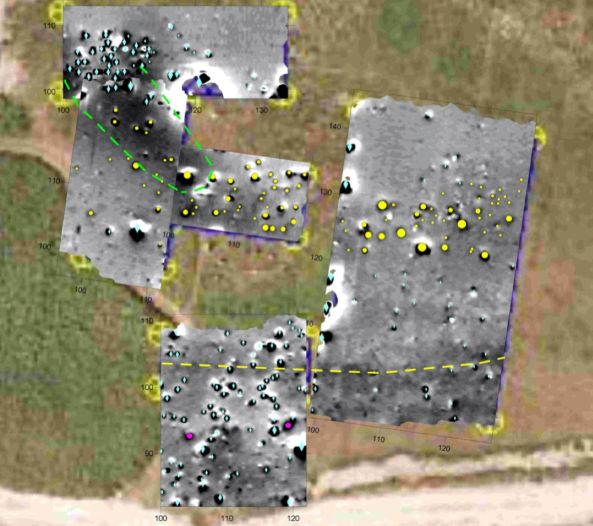
Im Jahr 2018 wurde vom Moesgaard Museum offenbar luftphotogrammetrische und LIDAR Untersuchungen des Areals vorgenommen. Weitere Informationen dazu liegen mir aktuell (noch) nicht vor.
Zum 20. Mai 2021 veröffentlichte die Flinders Universität in Adelaide/Australien (!) einen Bericht zu einer im Jahr 2018 vorausgegangenen Untersuchung der "Kalvestenene" auf der Insel Hjarnø.
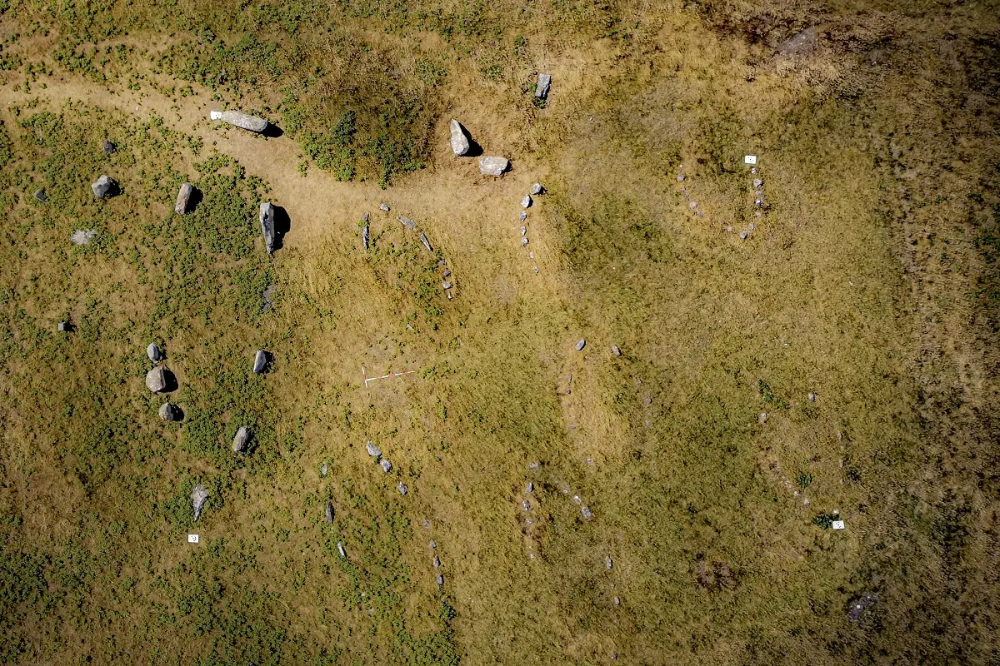
"New detailed surveys of Viking age ship settings in Hjarnø, Denmark have been completed by archaeologists examining the origins and makeup of the Kalvestene grave field, a renowned site in Scandinavian folklore. Credit: Flinders University"
Bildquelle: https://scitechdaily.com/kalvestene-grave-field-viking-ship-burials-shrouded-in-mystery/
Man wollte herausfinden, ob an der Örtlichkeit ursprünglich tatsächlich so viele Schiffssetzungen vorhanden waren, wie es die Skizze aus Ole Worms Werk - siehe oben - zeigt. Im Ergebnis konnten wohl tatsächlich ein (oder zwei) neue Schiffssetzungen ausfindig gemacht werden, die von der Lage her auch mit der Skizze von Ole Worm deckungsgleich sind. Dazu wurden auch die o.a. Untersuchungen aus dem Jahr 2018 benutzt. Leider verlangt man für den Download der Studie im The Journal of Island and Coastal Archaeology (UICA) satte 40 - das ist mir dann doch zu teuer. Am 26.06.2022 habe ich aber entdeckt, dass Dr. Erin Sebo den Artikel über "www.academia.edu" zum Download kostenfrei anbietet! Dankeschön!
Über diese Webseite (ars-TECHNICA) findet sich neben einem ausführlichen, englischsprachigen Aufsatz aber auch eine Reihe von technischen Bildern, die offenbar in dem o.a. Artikel Verwendung fanden - z.B. das hier.
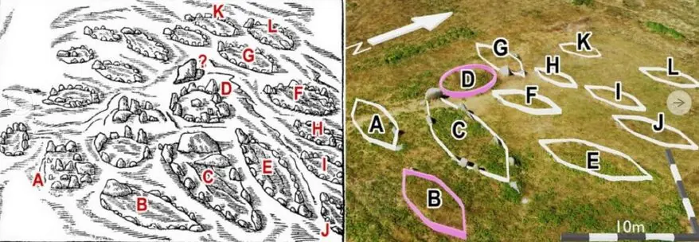
Im Rahmen meiner 2022er Jütland Wikinger Tour war es mir am Freitag, 17.06.2022, mal wieder vergönnt die Insel Hjarnø (per Fahrrad) zu besuchen. In der kleinen Kirche
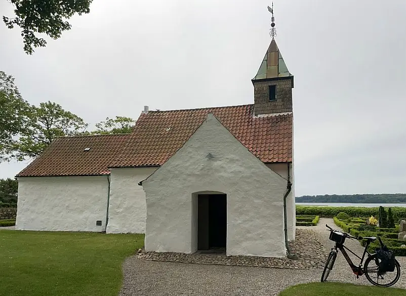
unweit des Fähranlegers hängt dieses tolle Wikingerschiff. Insgesamt gibt es heutzutage ca. 1400 Kirchenschiffe in dänischen Kirchen, aber nur selten handelt es sich dabei um ein Wikingerschiff.
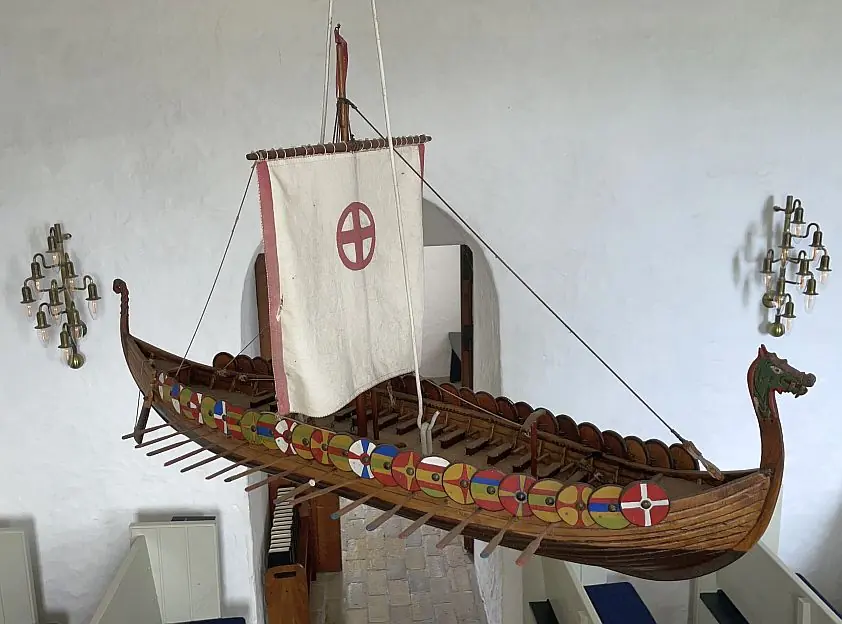
Von dort ging es weiter zu den Schiffssetzungen.
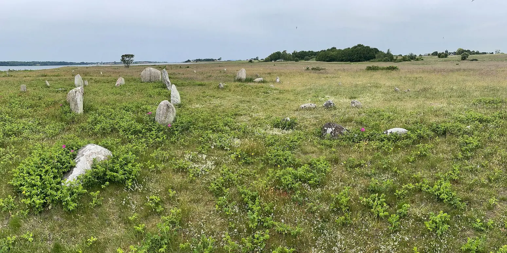
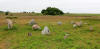 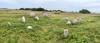 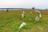 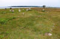 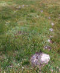 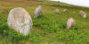 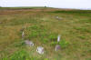 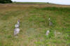 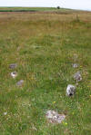 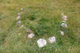 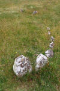


Erstmals habe ich die Monumente auch über ein ausgefahrenes und in die Höhe gestrecktes Einhandstativ - darüber aus ca. 4 m Höhe - fotografiert. Dadurch erhält man natürlich einen ganz anderen Blick auf die Schiffssetzungen.
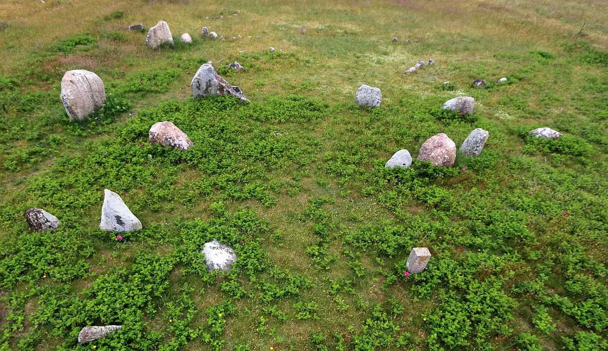
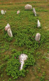 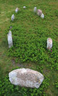 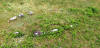 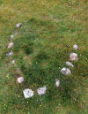 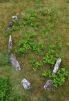 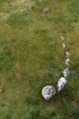


Die links eingestellten Fotos habe ich bei meinem Besuch auf der kleinen Insel am 22.08.2013 gefertigt, wie auch diese hier:
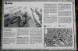 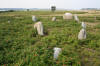 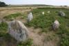 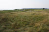 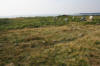 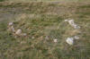 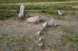


Am Mittwoch, 07.08.1991, war ich zum ersten Mal auf der Insel zu Besuch. Damals - ohne tatsächliche Infos zur genauen Lage, es gab noch kein Internet, kein Google Maps usw. - war es noch recht abenteuerlich. Die einzige Info, die mir damals vorlag, war deren Lage an der Strandkante. Dies führte nach der Ankunft mit der Fähre - zu Fuß unterwegs - unweigerlich zur Frage rechts oder links herum? Meine Wahl fiel auf links herum, worüber es bis zum Ziel gefühlt ewig dauerte - es waren ca. 6 km , während es rechts herum nur knapp 2 km gewesen wären. Aber so war das halt früher. Diese beiden Dias von damals habe ich durch abfotografieren am Lichtpult einfach selbst digitalisiert.


Dieses Luftfoto ist von der Webseite "Skraafoto.dk" - gehört zum "Klimadatastyrelsen" - Aufnahmedatum 02.04.2021 (Download 08.03.2022) - Freie Nutzung unter Beachtung der Lizenz: CC BY 4.0
Über diese Webseite von Skråfoto wird nach Eingabe der Anschrift die Örtlichkeit mit mehreren hochauflösenden Aufnahmen aus den vier verschiedenen Himmelsrichtungen und einer Senkrechtaufnahme wiedergegeben. Seit 2017 werden nun alle 2 Jahre solche Aufnahmen angefertigt werden.
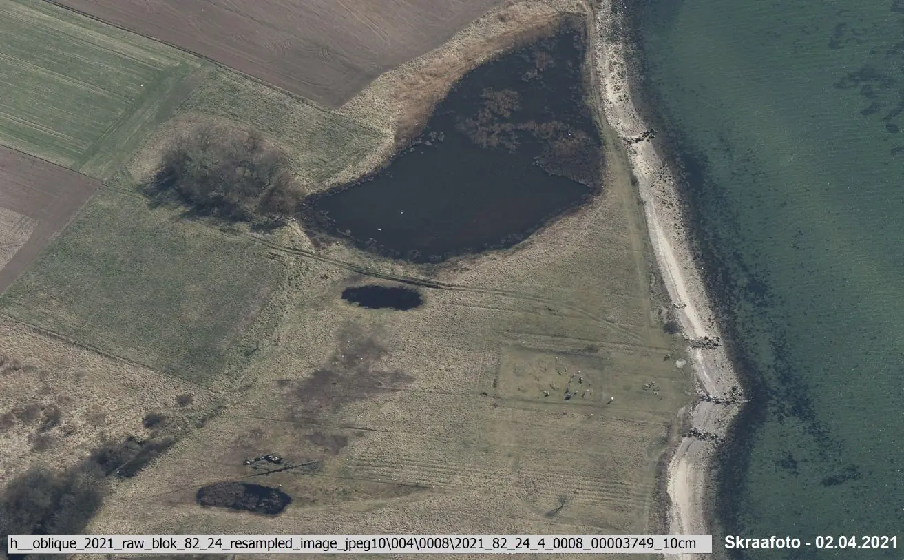
Detailausschnitt:
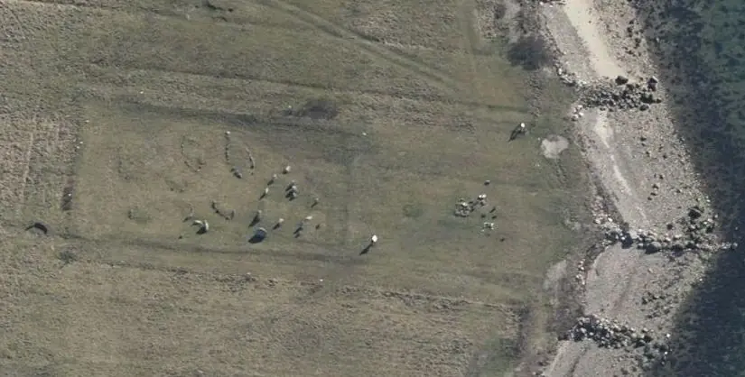
12.0.3.2023 - Inzwischen wurde die Webseite zu "Skraafoto.dk" völlig neu gestaltet. Wenn man z.B. die Adresse der Kirche - Østre Kirkevej 2K, 7130 Juelsminde - eingibt muss man im Hauptbild immer an der Küste entlangklicken und kommt dann zur Schiffssetzung.
In "Fund og Fortidsminder" gibt es einen Eintrag zu jeder einzelnen Schiffssetzung - wenn man richtig nah heranzoomt - der über einen von mir verlinkten Hotspot in der u.a. Karte aufgerufen werden kann. Zu jeder einzelnen Schiffssetzungen sind dort auch mehrere Fotos eingestellt, wobei die meisten leider zu einer Jahreszeit gemacht wurden, als der Bewuchs am stärksten war, so dass man bei einigen nichts sieht außer Gras und Hagebuttensträucher. Mit der linken Maustaste angeklickt öffnen sich die Bilder bei mir in Übergröße, so dass man sie nicht betrachten und auch nicht abspeichern kann. Die Fotos muss ich an meinem PC mit dem Scrollrad anklicken, dann öffnen sie sich in einem separaten Fenster und können dann auch abgespeichert werden. Es dauerte einige Zeit, bis ich das raus hatte. Unglücklich gelöst.
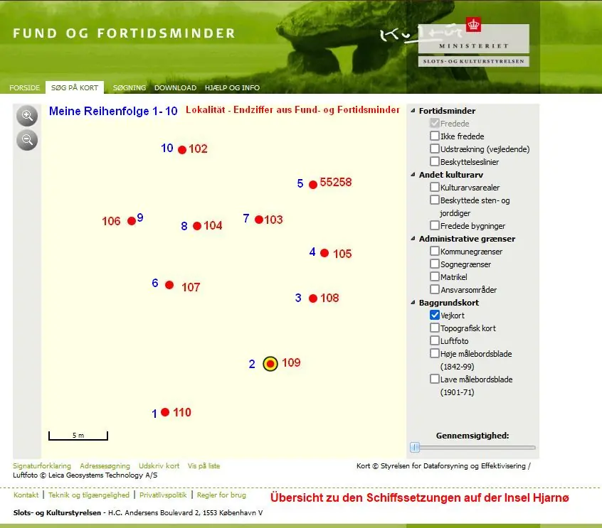
Die übersetzten Beschreibungen aus diesen Berichten habe ich hier aufgelistet - hier auch als WORD Dokument abzurufen.
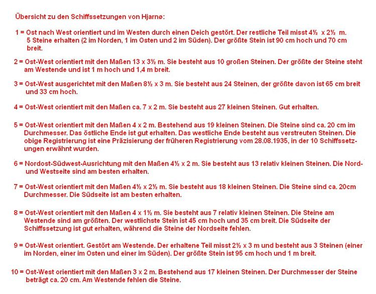
Bei meinen Hjarnø Recherchen stieß ich erstmals auf diese Webseite - http://b2find.eudat.eu/. Zu der Seite heißt es: "B2FIND ist ein interdisziplinäres Entdeckungsportal für Forschungsergebnisse, das eine freie Begriffssuche ermöglicht, Ergebnisse können anhand mehrerer Facetten eingegrenzt werden, einschließlich räumlicher und zeitlicher Suchoptionen...". Über eine Suchfunktion z.B. mit dem Suchbegriff "Hjarnø" bekommt man dieses Ergebnis: 63 datasets found for "hjarnø" - darunter die Berichte / Seiten aus aus Fund- og Fortidsminder. Vorneweg heißt es dann immer: "Diese Aufzeichnung beschreibt antike Stätten und Denkmäler sowie archäologische Ausgrabungen, die von dänischen Museen durchgeführt wurden." Die Daten werden von der dem Kulturministerium angeschlossenen Behörde "Slots- og Kulturstyrelsen" eingepflegt.
Einen deutschsprachigen Flyer mit einer Karte, in der die Lage der Schiffssetzungen eingezeichnet sind, findet sich hier als Link.
Die Daten zur Fährverbindung Snaptun-Hjarnø habe ich hier als Verlinkung eingestellt.
Literaturhinweise:
Acta Archæologica - Band 7 - 1936 - S. 333 ff. (Foto darin siehe oben - nur kurzer Textbeitrag zu der 1935 erfolgten Augrabung)
H.C. Broholm - Skibssætninger i Danmark - Fra Nationalmuseets Arbejdsmark 1937 - S. 11-26
Oldtidsgravene på Hjarnø : den største oldtidsbegravelse i skibsætningsform i Danmark, ca. 1935 - Auf diese Brochüre wurde ich bei einer Internet-Recherche über diese Seite aufmerksam (Mit Download Möglichkeit). Da dort die Qualität aber - insbesondere bei den Fotografien - sehr schlecht ist, habe ich nach einer anderen Option gesucht. Über die Bibliotheken in Horsens und in Juelsminde wurde mir dankenswerterweise weitergeholfen. Man hat es mir auf Anfrage neu eingescannt - Es kann hier in fünf einzelnen pdf Dateien abgerufen werden.
Hjarnø_1.pdf / Hjarnø_2.pdf / Hjarnø_3.pdf / Hjarnø_4.pdf / Hjarnø_5.pdf
Bestattung im Boot - Studien zu einer nordeuropäischen Grabsitte - Michael Müller-Wille - Offa - Berichte und Mitteilungen - Band 25/26 - 1968/69 - S. 20ff. / S. 186ff. - Nr. 79
Schiffssetzungen - Torsten Capelle - Prähistorische Zeitschrift - Band 63 - 1986 - S. 1-63
Monumentale skibssætninger i Danmark og Skåne - Felix Vestergaard - KUML 2007, Nr. 56 - S. 145 - 190 - kurze Erwähnung von Hjarnø Schiffssetzungen auf der S. 145 letzter Absatz
The Kalvestene: A reevaluation of the ship settings on the Danish island of Hjarnø - - in: The Journal of Island and Coastal Archaeology 2021
Saxo Grammaticuss Account of the Viking Age Site on the Danish Island of Hjarnø in Gesta Danorum - By Matthew Firth and Erin Sebo - Flinders University of South Australia -
17.09.2018 - Bereits 2016 gingen die beiden Hobbyarchäologen Terese Frydensberg Refsgaard und Brian Kristensen in ihrer Freizeit auf einem Feld auf Hjarnø spazieren. Sie hatten ihre Detektorausrüstung dabei und fanden einige erstaunliche Goldstücke, die sie zu den Archäologen des Vejle Museums brachten.
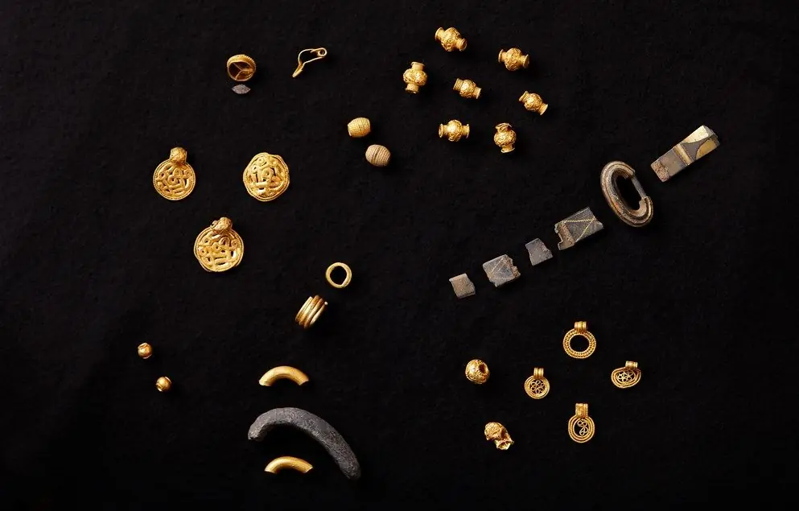
Foto: Vejle Museum